欢迎来到清州大学
本页面整理了新生及插班生说明会的核心内容，请点击左侧菜单快速导航。
综合情报系统 (Portal)

点击图片放大
- 初始密码： 8位生日（例如：20030101）。
- 账号锁定： 输错10次会自动锁定，需自行重置。
- 首次登录后请务必填好电话和邮箱， 这是找回密码的唯一途径。
- 尽量少用浏览器自带的翻译功能， 可能会导致单词意思不准确。
常见弹窗处理指南
1. 如果进入系统跳出以下弹窗，不想改密码或者填信息的，可以按照下面的方法操作：
点击右上角的叉 (X) 关闭即可。
示意图：点击右上角X
2. 如果想要填写信息、修改密码：

填写重要提示：
如果想要填写信息改密码，在 예금주 (户主名) 处需要写自己 外国人登陆证上的名字 (包含空格)。
找回密码
账号锁定与重置
如果密码输错 10次，账号会自动锁定，此时必须自行重置密码。
注意：必须在系统中预先填好手机号和邮箱，才能使用找回密码功能。
Step 1点击找回密码
Step 2填写验证信息
主要学事日程
📅 详细日程查看方法
- 进入学校官网 portal.cju.ac.kr
- 点击页面上的相关按钮（参考右图）
- 即可查看到从选课开始到领取毕业证的整个学期学事日程
进入portal首页后学校通知查看方法
这里有学校的所有通知
有需要的同学自行进入后查看。这里的通知面向所有清州大学学生，有的不适用于双语学生
个人信息查看及修改
重要提示：完善个人信息
先进入系统填好自己的电话和邮箱。
这里填好自己电话和邮箱才能重置密码。
在这个页面先写上能正常接收邮件的邮箱，以防日后密码忘记，方便重置密码。
课程表查询指南
第一步：进入查询页面
进入综合情报系统后，点击上方的红框菜单，然后点击左侧菜单栏。
第二步：筛选与搜索
TIP 点击右上角的蓝色图标可以下载课程表。
第三步：如何看懂课程表
时间解读 (수 1,2,3)
- 수： 星期三 (수요일)
- 1,2,3： 第1, 2, 3节课
- 实际时间： 09:00 ~ 12:00
地点解读 (31-215)
- 31： 31号楼
- 215： 215号教室
- 完整地址： 31号楼 2楼 215室
课时与时间对照表 (90分钟课程制)
| 课时 (교시) | 1 | 2 | 3 | 4 | 5 |
|---|---|---|---|---|---|
| 时间 | 09:00 ~10:00 | 10:00 ~11:00 | 11:00 ~12:00 | 12:00 ~13:00 | 13:00 ~14:00 |
| 课时 (교시) | 6 | 7 | 8 | 9 | - |
| 时间 | 14:00 ~15:00 | 15:00 ~16:00 | 16:00 ~17:00 | 17:00 ~18:00 | - |
选课前的课程筛选
选课开始前重要须知
课程安排每天都可能有变动（如教授调整、选课人数不足导致停开等），Excel无法每天及时更新并上传最新课表。
请需要的同学请自行下载课表查询最新信息。
进入系统菜单
进入系统之后，点击上方菜单栏红框位置。
选择菜单项
点击左侧菜单指定位置。
设置筛选条件
把筛选改成和下图显示的一样，然后点右上角的蓝色放大镜，最后按右下角的淡蓝色方块下载Excel。
Excel 表格筛选处理
1. 查看首行
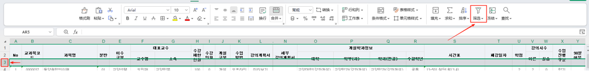2. 开启筛选 (Ctrl+Shift+L)

3. 筛选"이중" (双语)
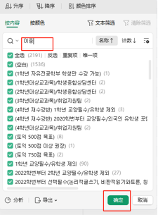查看结果与区分
截止到目前已经筛选出了所有双语课程。
如果是大一新生（非双语的学生），请直接避开刚才筛选出的这些课。
找专业课 (中文授课)
找教养课
总结：
以上查找流程仅针对双语学生。
非双语学生不能选双语课程，直接参考 비고 的具体说明选择即可。
Excel 表头中韩对照表
| No | 韩文 | 中文 |
|---|---|---|
| 1 | 비고 | 备注 (重要) |
| 2 | 교과목코드 | 课程代码 |
| 3 | 과목명 | 课程名称 |
| 4 | 분반 | 分班 / 班号（Section） |
| 5 | 이수구분 | 修读类别 / 修课区分 |
| 6 | 대표교수 | 负责教授 |
| 7 | 수강제한인원 | 选课人数上限 |
| 8 | 수강인원 | 已选人数 |
| 9 | 개설구분 | 开课类别 / 开设区分 |
| 10 | 수업방법 | 授课方式（线上/线下/混合等） |
| 11 | 강의계획서 | 课程教学大纲 |
| 12 | 강의미리보기 | 课程预览 |
| 13 | 세부 강의계획서 | 详细教学计划 |
| 14 | 개설학과정보 | 开课院系信息（组） |
| 15 | 시간표 | 课表 / 时间表 |
| 16 | 폐강일자 | 撤课/停开日期 |
| 17 | 학점 | 学分 |
| 18 | 강의시수 | 授课时数 |
| 19 | 수업진행구분 | 授课实施类别（进程区分） |
| 20 | 90분 여부 | 是否为90分钟（单节） |
| 21 | 패스 과목 여부 | 是否P/F课程（及格/不计分） |
| 22 | 성적 평가 구분 | 成绩评定方式 |
| 23 | 상대 평가 구분 | 相对评价区分（曲线评分） |
| 24 | 강의 평가 여부 | 是否进行课程评估 |
| 25 | 강좌유형 | 课程/讲座类型 |
| 26 | 교과목유형 | 科目类型 |
| 27 | 강의유형 | 授课类型（讲授/研讨/实验等） |
| 28 | 교과요소 | 课程要素 |
| 29 | 교양 | 通识（组） |
| 30 | 수강대상 | 选课对象 / 面向对象 |
| 31 | 8대핵심역량 | 八大核心能力 |
| 32 | 전공역량 | 专业能力 |
| 33 | 수강가능학과 | 可选课院系/专业 |
选课指南
请务必使用电脑浏览器访问
#1选课系统登录
#2选课界面概览
#3学年选择与刷新（必看）
找不到想要的课？先检查学年 수강학년是否选错
规则：Excel 写的是第几学年，这里就必须选第几学年（选错不会显示课程）
提示： 每次更改筛选条件后，都要点击右上角的 小蓝色按钮 刷新。
#4备注确认 (生死攸关!)
⚠️ 双语学生务必确认备注栏 (비고)
必须包含以下文字之一，否则没有学分！
#5常见报错速查
网课申请时不能超过当前学期总学分的30%。例如：这学期一共18分，18*30%=5.4分 即不能超过5.4分
❌ 时间冲突
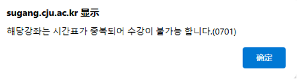所选的课与已有课程时间重叠。
✅ 申请成功
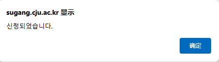课程申请成功。
❌ 学分超限
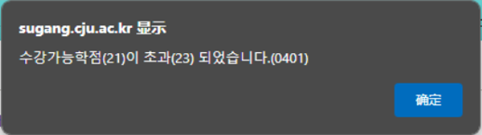超过每学期最大选课学分（通常21分）。
⚠️ 是否重修
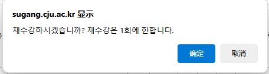询问是否要重新上这节课⚠️务必注意重修不给重复学分。
⚠️ 禁止重修
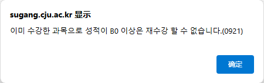上学期成绩在B0以上，无法重修。
毕业剩余学分查询
非双语学生特别要求
非双语学生需要一共修满130分并且必须完成以下 3门 课程方可毕业：
-
1
인공지능기초와활용(공학계열)工科以及人工智能专业选这个
인공지능기초와활용(인문사회·예체능·자연계열) 其他专业选这个 - 2 한국문화의이해 (Korean Culture)
- 3 인간의가치 (Human Values)
操作图示（点击可放大）
请假申请指南
以下两张图为学校允许的假期类型，请需要请假的同学参考
学校批准假期种类1
学校批准假期种类2
第一步：点击上图按钮
第二步：选择理由和日期，上传附件
第三步：确认无误后点击申请
打印各类证明
在校生可以自己打印学校的各类证明，这里打印的证明均为原件
第一步：进入官网点左上角
第二步：先点上面的红框，再点下面的
第三步：这里有学生可以打印的所有证明，选择自己需要的后双击
第四步：点最右边的按钮，然后可以选择PDF格式保存，也可以直接打印
学校地图 & 校车
根据第一张图进入后可以查看学校地图

校内校车站点
- 国际宿舍（43号楼）
- 艺大音乐馆（35号楼）
- 学生会馆（国际交流处）
- 保健医疗大（8号楼）
- 图书馆（11号楼）对面
- 正门
根据下面步骤查看学校校车时间
校车时刻表 A
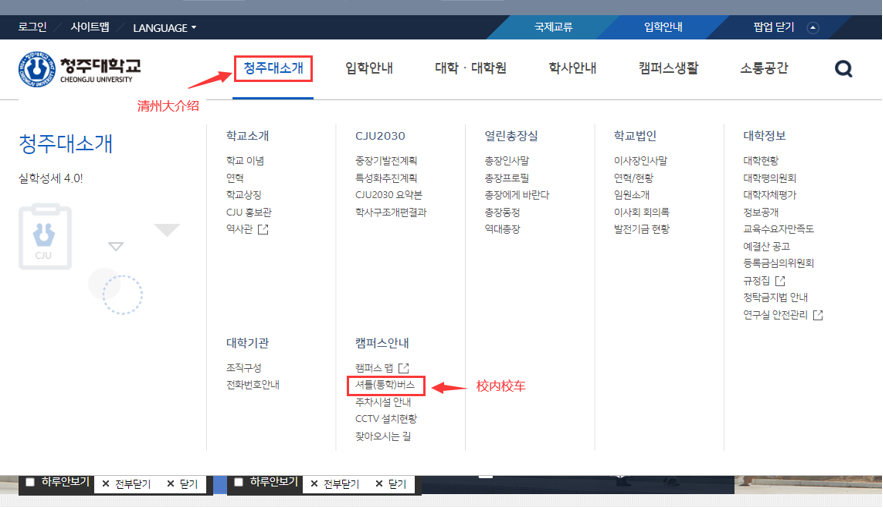校车时刻表 B
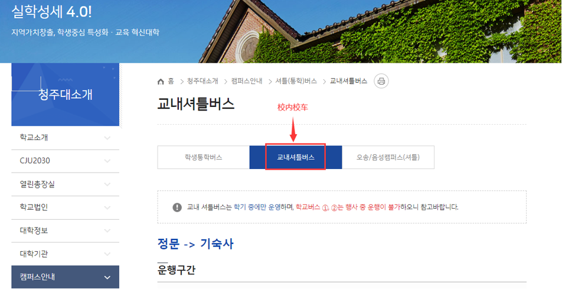网课系统 (HIVE)
网课申请时不能超过当前学期总学分的30%。例如：这学期一共18分，18*30%=5.4分 即不能超过5.4分
输入账号密码

选择课程
进入听课页面 确认出勤
听课时会有确认按钮
教授联系方式
进入portal
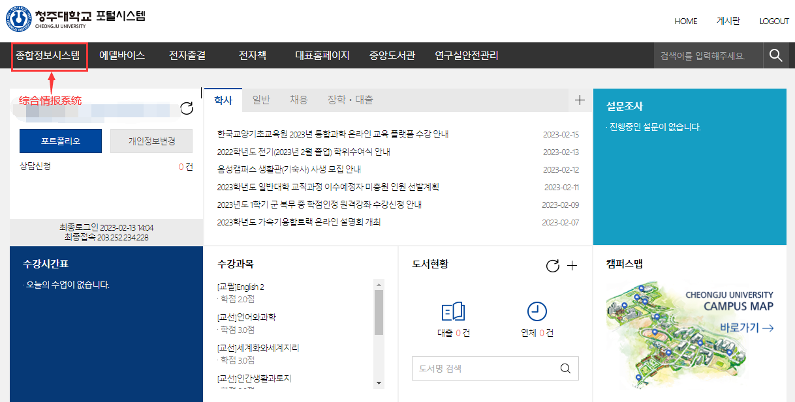根据图中操作
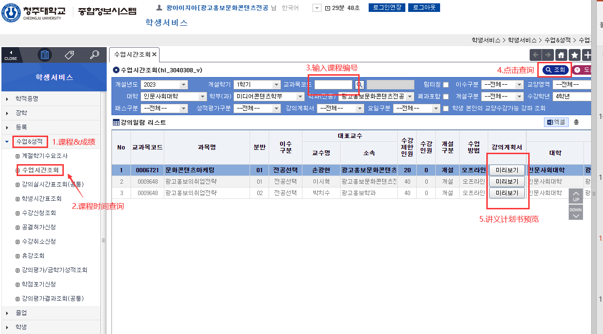讲义计划书
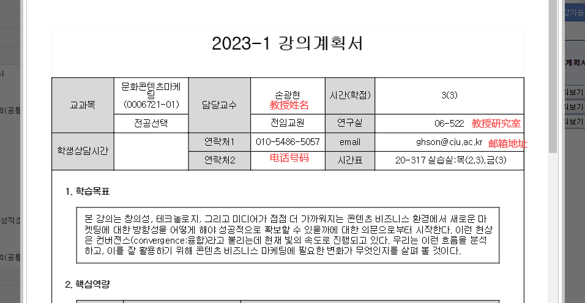学校官网（不是portal）
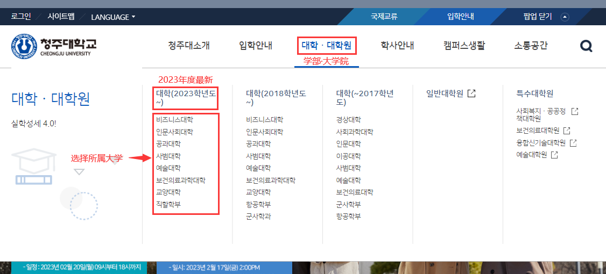找到自己的专业 专业办公室也在这 电话号码左边就是专业办公室
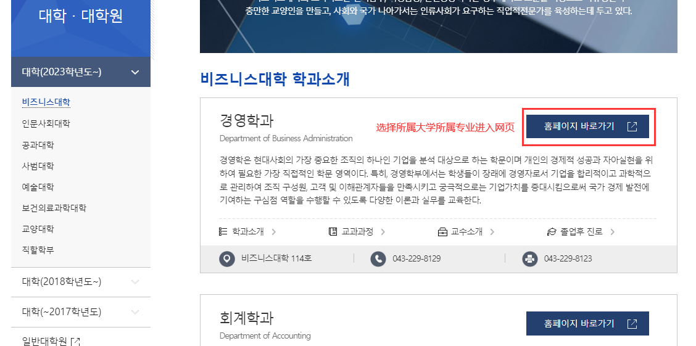选择教授介绍
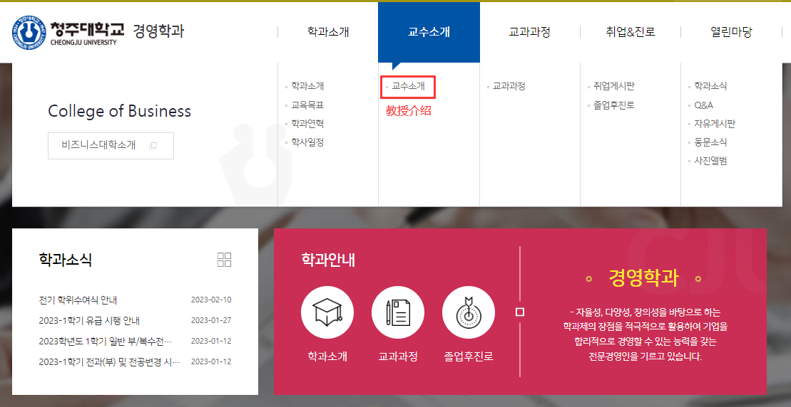教授的学校内线号码（拨打前加上043229）和邮箱
图书馆使用
APP: 搜索 "청주대학교 중앙도서관"
Android：需要在google play里下载
输入账号密码
选择课程
账号: 学号 / 密码: 生日后6位
进入听课页面 确认出勤
听课时会有确认按钮
登陆证办理
留学生活动
中韩学生交流 (Mentoring)
与韩国学生组队，学校提供经费支持，一起出游体验韩国文化。
治安巡逻队
与当地警察局合作，每月活动两次，颁发正式委任状。
联系方式与注意
重要提醒
联系方式变更时，务必在 Portal 系统更新！连续缺勤会被警告。
国际交流处
043-229-8810 / 7421
QQ: 2217629612 (备注专业姓名)
学事支援组
043-229-8812
地址: 大学文化馆1楼 国际交流处 (28503)